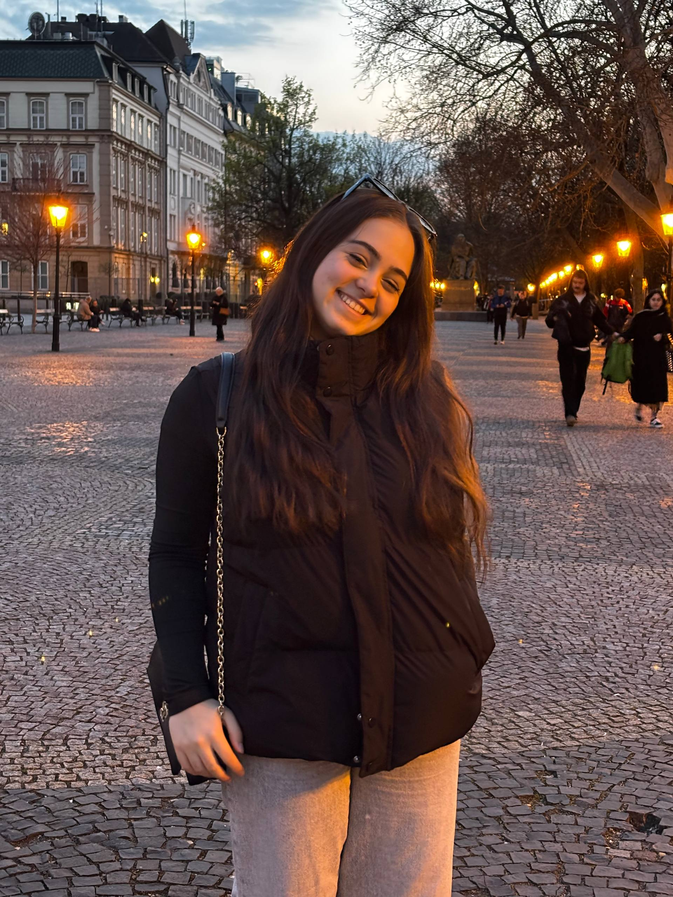

O mne
Som Romina, študentka aplikovanej informatiky na STU v Bratislave. Programujem, tvorím weby a venujem sa počítačovému videniu. Baví ma skúšať nové technológie a premieňať nápady na fungujúce projekty.
Počas štúdia sa zameriavam najmä na programovanie, vývoj webových aplikácií a prácu s obrazovými dátami. Do budúcnosti by som chcela svoje znalosti ďalej rozvíjať a venovať sa projektom, ktoré prepájajú programovanie s reálnymi problémami.
- Zaujímam sa o spracovanie obrazu a rozpoznávanie objektov pomocou počítačového videnia.
- Najviac skúseností mám s jazykom Java a Python, ktoré využívam pri školských aj vlastných projektoch.
- Pracujem s databázami a SQL pri tvorbe aplikácií a ukladaní a spracovaní údajov.